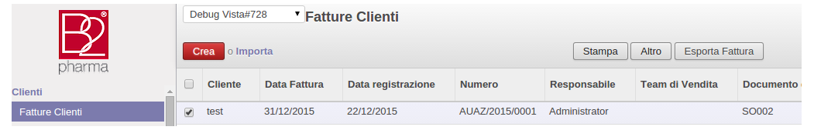

Funzioni principali del modulo
Questo modulo permette di specificare le caratteristiche di un prodotto Dhl:
il codice prodotto, il tipo di spedizione e il codice pagante.

E' stato creato da xml, il classificatore: Prodotti Dhl
Importa i prodotti Dhl
Nella creazione del DDT, sono stati aggiunti i campi: Codice prodotto Dhl e Tipo spedizione
che di default fanno riferimento all'azienda di riferimento e inoltre vi é la possibilita' di modificarli

Selezionando i DDT, é stato aggiunto un bottone chiamato: "Esporta Ddt", che permette di scaricare
un file csv contenente i dati dei Ddt selezionati, che sono in stato "Confermato", altrimenti se questi non hanno questo stato, il file viene scaricato lo stesso, ma con un messaggio di errore.

La stessa funzione é stata inserita per le fatture accompagnatorie, con un bottone chiamato: "Esporta Fattura",
che permette di scaricare un file csv per le fatture in stato confermato, mentre per quelle che non sono confermate,
viene scaricato lo stesso file ma con un messaggio di errore.
Nota: Bisogna aver installato il modulo "unicodecsv"
che di default fanno riferimento all'azienda di riferimento e inoltre vi é la possibilita' di modificarli
un file csv contenente i dati dei Ddt selezionati, che sono in stato "Confermato", altrimenti se questi non hanno questo stato, il file viene scaricato lo stesso, ma con un messaggio di errore.

Nota: Bisogna aver installato il modulo "unicodecsv"